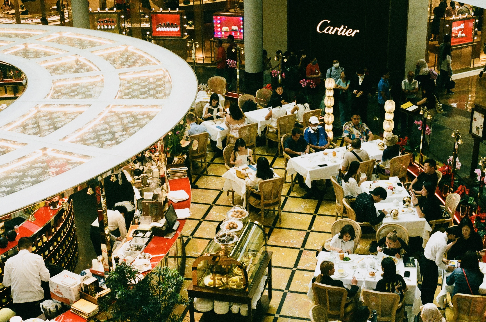
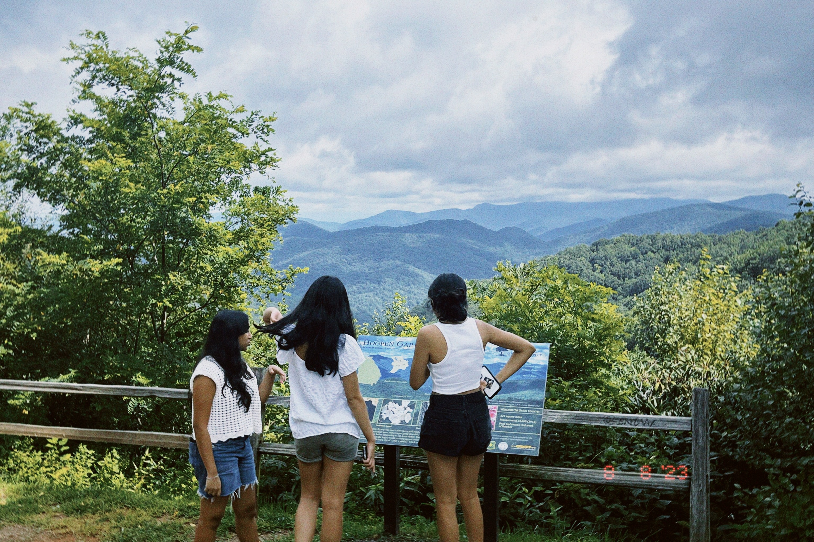
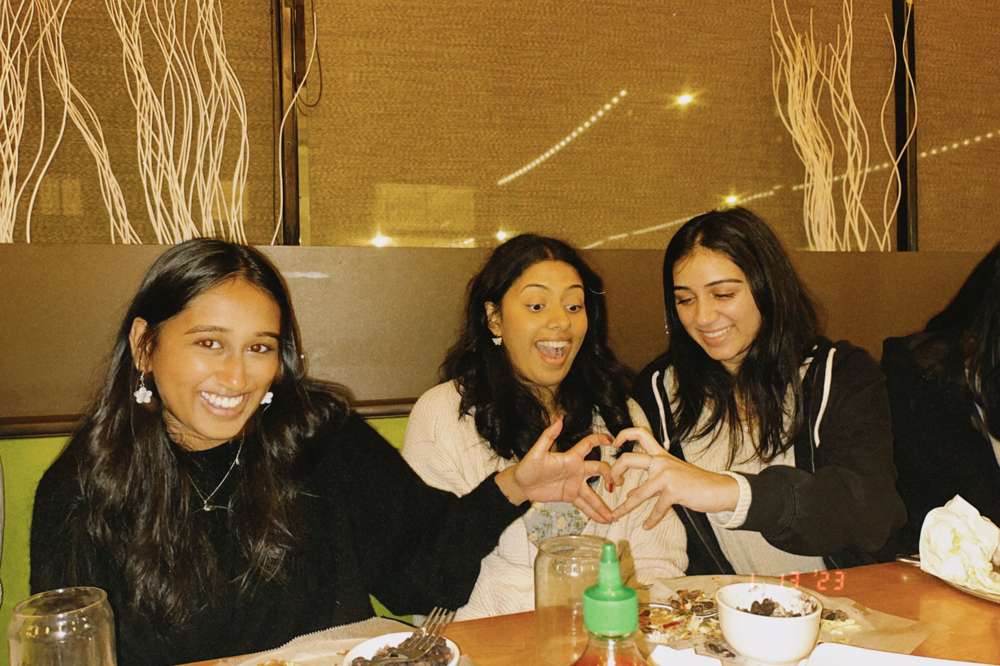
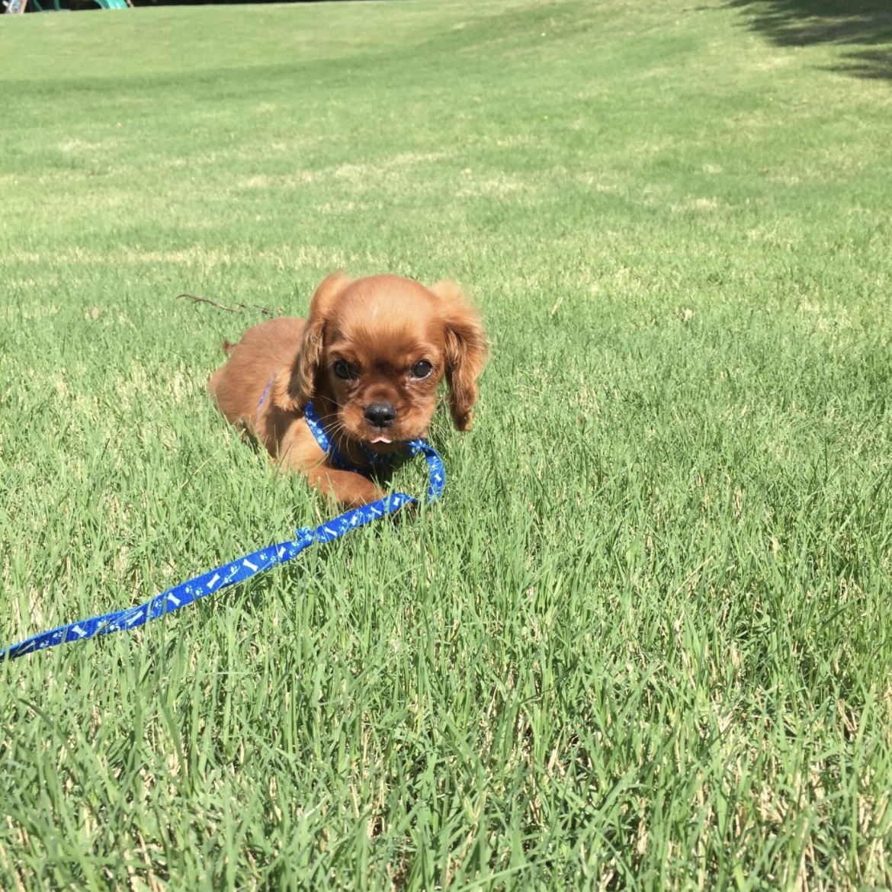
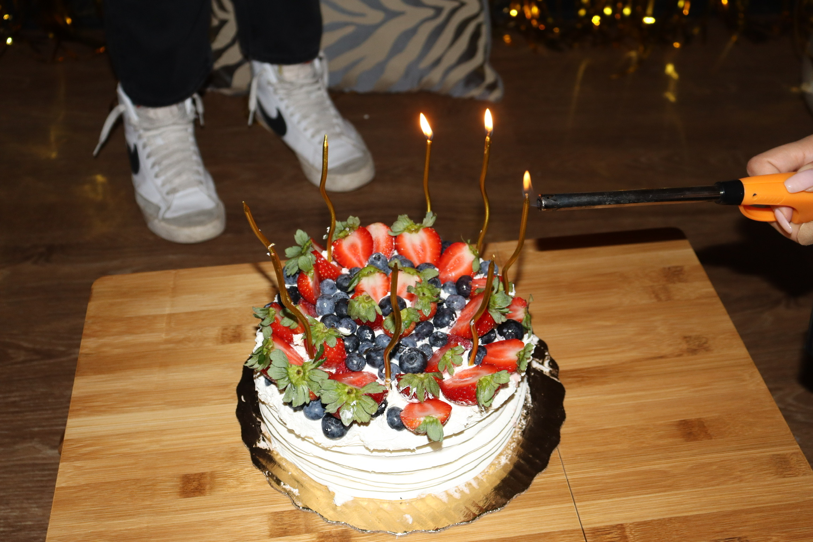

I am a second year at Georgia Tech studying Computational Media, an interdisciplinary program that combines computer science and interaction design. Throughout my time at Georgia Tech, I have learned how technology is able to affect the human condition. I have gained technical expertise from my computer science classes as well as creative skills from my design classes. My courses such as Object-Oriented Programming, Objects and Design, Visual Design, and Data Structures and Algorithms have adqueately prepared me for a career in technology. My passion for design lies where product design meets digital well-being. As a designer and front-end developer my goal is to create meaningful experiences that enhance peoples lives.
My motivation for design lies in my desire to help people have seamless and intuitive interactions with technology, making their lives more efficient and enjoyable. After completing the Bits of Good Design Bootcamp, my design values were fostered, expanded upon, and became an integral part of my approach. This program honed in on my technical skills and instilled a deep appreciation for user-centered design, empathy driven solutions, and the power of aesthetics. The variety involved in the UI/UX field intrigues me the most. Visual design, UI coding, problem solving, writing, research, data analysis, it has everything. There's so much I get to learn and develop, and whenever I get bored I can try something new.